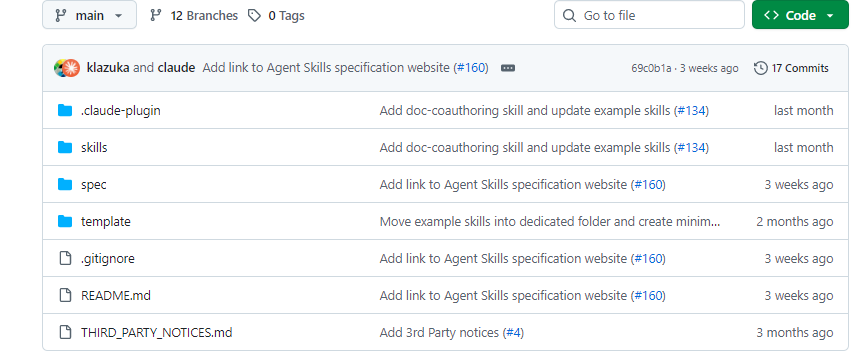
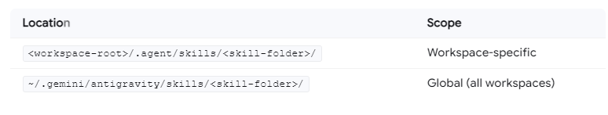
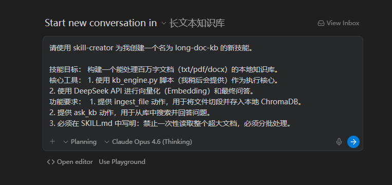
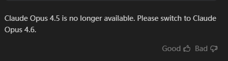
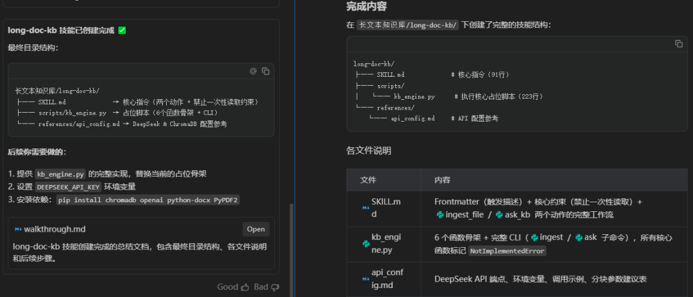
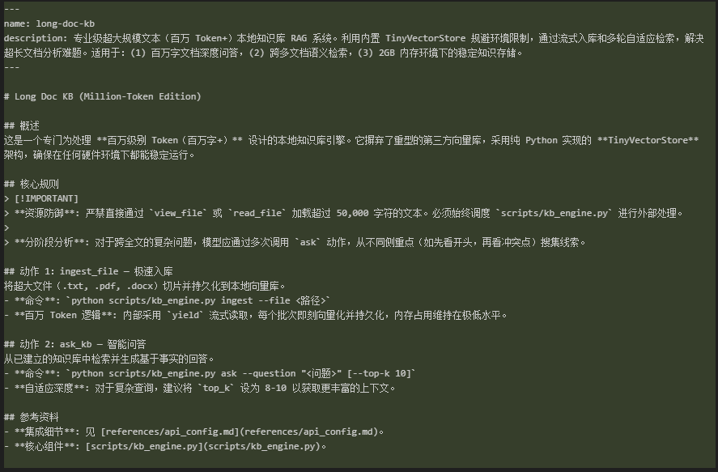
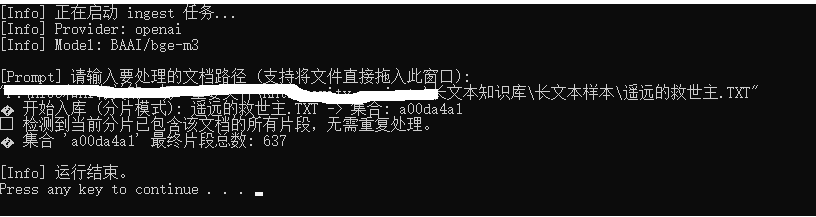
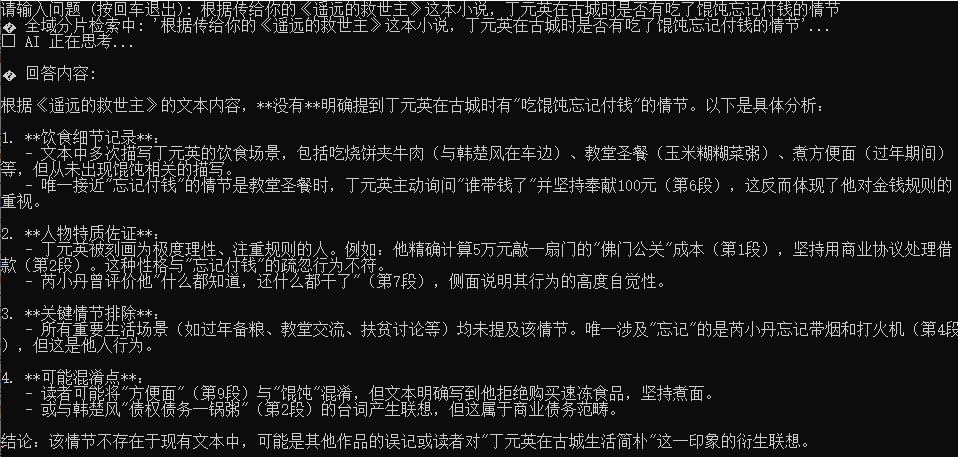

一、准备工作
可以正常运行的Antigravity IDE
硅基流动的API Key
准备好长文本的测试文档
二、构建长文本知识库Skill的过程
先下载Claude Skills，地址：https://github.com/anthropics/skills

这是Anthropic 官方推出的skills 仓库，其中skill-creator能指导你创建新的技Skill。接下来用skill-creator来生成长文本知识库skill
Antigravity支持全局Skills和工作区Skills

我们将Claude Skills放在工作区下，在指定的工作区中新建.agent目录，再将Claude的skills文件夹copy到.agent目录下。
在 Antigravity 的对话框中，输入初始指令（建议使用 Manager 模式，因为它更擅长规划和执行任务），后续有问题让agent自行调整
“请使用 skill-creator 为我创建一个名为 long-doc-kb 的新技能。
技能目标： 构建一个能处理百万字文档（txt/pdf/docx）的本地知识库。
核心工具：
1. 使用 kb_engine.py 脚本（我稍后会提供）作为执行核心。
2. 使用 DeepSeek API 进行向量化（Embedding）和最终问答。
功能要求：
1. 提供 ingest_file 动作，用于将文件切段并存入本地 ChromaDB。
2. 提供 ask_kb 动作，用于从库中搜索并回答问题。
3. 必须在 SKILL.md 中写明：禁止一次性读取整个超大文档，必须分批处理。”
ChromaDB因为环境中DLL冲突最后换成了python和numpy库自主研发的TinyVectorStore轻量级数据库----这些都是Agent在执行的过程中发现了问题自行解决的。

Note： Claude Opus 4.6（Thinking）在Antigravity里已经可以用了，但Claude Opus 4.5无法再用。

两分钟后，初始框架搭建好了，后续agent会自行优化

在Antigravity Terminal里手动安装依赖包或直接让Agent来安装
pip install chromadb openai python-docx PyPDF2
agent已经将kb_engine.py的占位脚本写好，让它直接实现脚本
几轮优化后，可以直接使用的SKILL.md如下：

ingest入库测试
找一篇近50万字的长篇小说，将中文字符换算成tokens之后，总的tokens接近100万tokens

RAG检索测试
为了避免背书式回答问题，问它一个原作中没有但衍生作品中有的问题

三、几点总结
Antigravity中的Claude Opus4.6额度太少，用几次就没了
Antigravity中的Gemini 3 Pro（High）没有Gemini 3 flash好用，后者用起来更聪明并且反应快，Pro似乎降智比较多
整个过程中，让agent自行执行执行命令，遇到问题自行解决问题---它会自己解决所有问题，几乎不需要人工干预
如果硬件环境受限或依赖环境受阻，请勇敢地自己写向量索引
在处理百万 Token 时，必须建立起“流”的意识。从文件读取到处理，再到 API 调用，凡是涉及大规模数据的环节，都必须可控地进行“分段分批”
数据量大时，数据库分片Sharding 是高效的扩展方案。将不同书籍、不同时段的知识存为独立文件，可以实现“查询时局部唤醒”
Vibe Coding时请注意版本控制